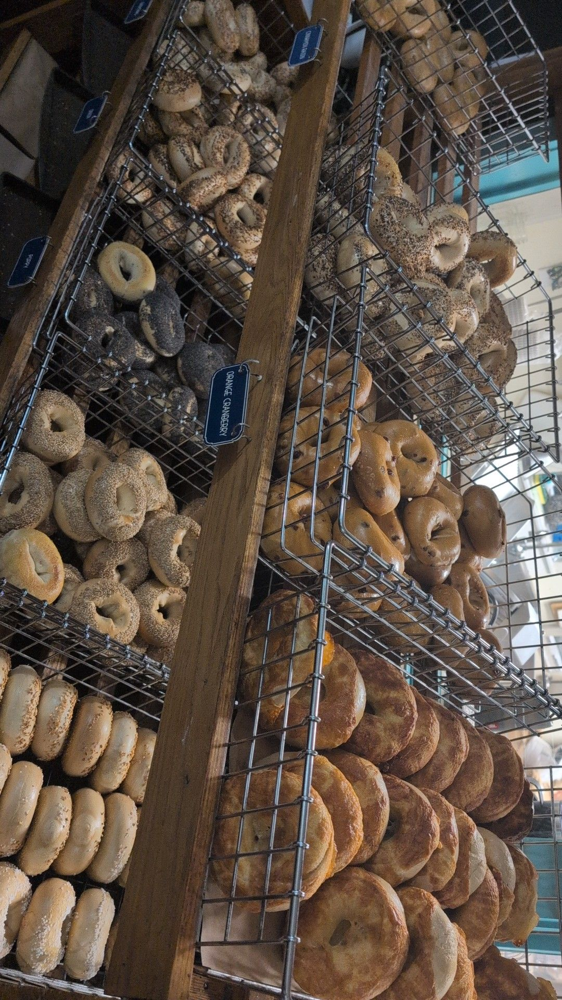

A co-op, a kettle,
and a small room
on Main.
We've been baking on this block since 2018. Here's how we got here, and how we think about what we do every morning.
Hole In The Wall Bagels started as a side project of the Good Tern Co-op, Rockland's member-owned grocery store, which has been on Main Street since 1981. The room we bake in was a pizza shop, then a sandwich shop, then empty for a while. In 2018 we put an oven in it, mixed a batch of dough the night before, and opened the door the next morning with a rack of bagels and a pot of coffee.
We wanted to make good bagels — not the grocery-store kind, not the airy brunch-spot kind, but the dense, chewy, kettle-boiled kind you remember from a corner shop somewhere you used to live. The recipe is pretty traditional: flour, water, salt, a small amount of malt, a long cold ferment in the walk-in, a boil in honey water, a few minutes in a hot oven. Nothing clever.
Community ownership, not branding
The Good Tern is a cooperative, which in practice means the shop is owned by several hundred people in town, and every dollar that comes through the register either pays a neighbor's wage or buys flour for tomorrow's batch. It isn't a marketing angle — it's how the store has been run for forty years. When we reopened the bagel shop we kept that same structure because it felt like the least complicated way to do an honest thing.
Baked in small batches, for now
We only open Thursday through Sunday right now, and we only bake as many bagels as we think we can sell that day, usually a few hundred. If you come in after 11am on a Saturday there's a good chance the specialty board is already picked clean. We'd rather run out than leave the last racks sitting there at noon. It makes planning a little harder, but it makes the bagels better.
What's next
More days, eventually. A slightly bigger oven, maybe. A few more sandwich ideas that use the fish that comes off the boats a few blocks from here. Mostly, though, the plan is to keep the same small thing going, and to keep it good. If that sounds like the kind of place you'd want to spend a Saturday morning, the door opens at seven.

Dough made one
day. Baked the next.
The dough is mixed the afternoon before and spends the night cold in the walk-in. That long ferment is what gives our bagels their chew. In the morning they get divided by hand, rolled, boiled in honey water, seeded, and baked on wood boards until the crust cracks when you squeeze one.
No fancy machine, no mixers running all day, no shortcut to any part of it. The only reason we do it this way is that it's the way that makes a bagel that tastes like we want it to.
Thursday morning,
seven o'clock sharp.
754 Main Street, Rockland. The door opens at seven, the oven is already hot, and the first pot of coffee has been going for an hour.